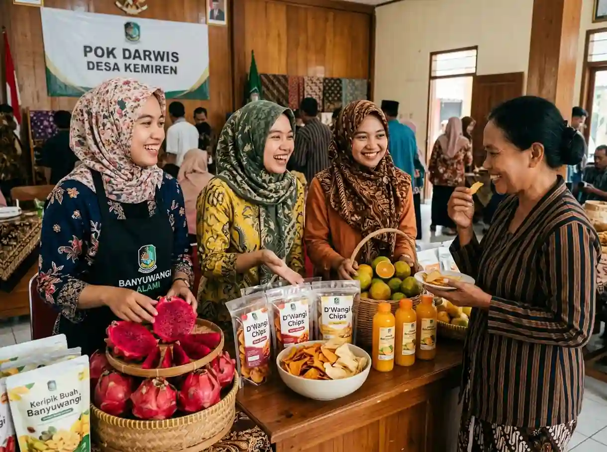
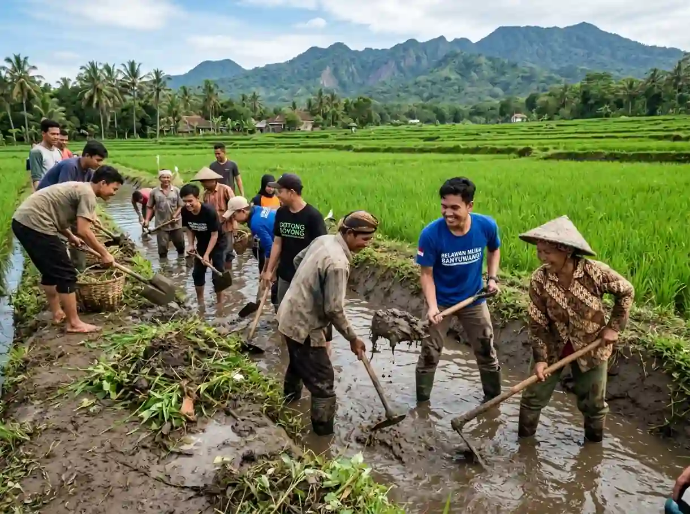
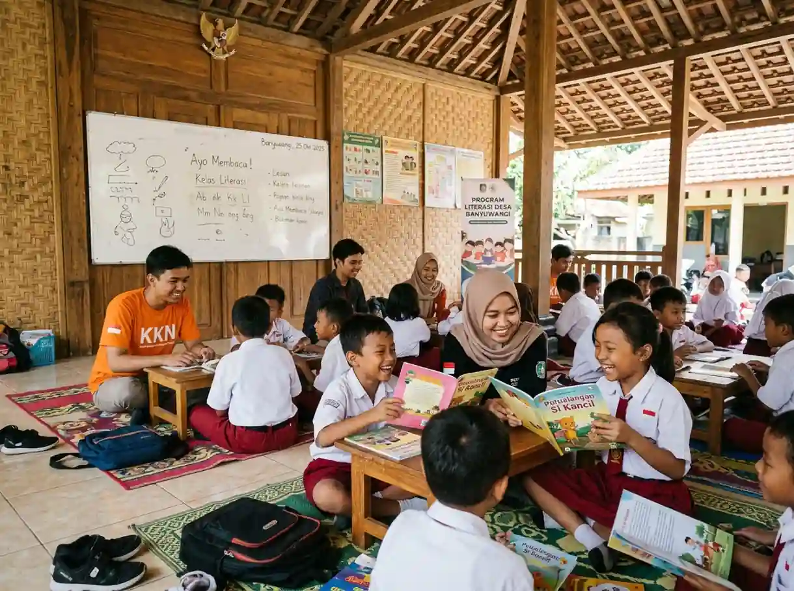

Membangun Desa Purwoasri dengan Karya Nyata & Integritas
Wadah kolaborasi pemuda-pemudi Desa Purwoasri, Kecamatan Tegaldlimo, Kabupaten Banyuwangi. Bersama menggerakkan gotong royong warga, inovasi UMKM desa, turnamen olahraga, dan kepedulian sosial lintas generasi.
Gotong Royong
Kerja bakti & 4 dusun kompak
Inkubasi UMKM
Pendampingan usaha desa
Olahraga & Seni
Turnamen & wadah bakat
Aksi Sosial Nyata
Bimbel gratis & santunan
Gerakan yang Merangkul Semua Kalangan
Program kami dirancang agar memberi dampak positif dan nyata bagi setiap generasi di Desa Purwoasri.
Kreativitas, Olahraga & Bakat
Wadah positif untuk menyalurkan bakat olahraga (voli & futsal), pelatihan desain digital, musik seni daerah, dan kompetisi kreatif agar generasi muda berprestasi.
- Turnamen Voli Antar Dusun
- Pelatihan Desain & Konten Media
- Komunitas Seni Musik & Tari Tradisional
Inkubasi UMKM & Pemasaran
Dukungan promosi produk olahan lokal (pertanian jeruk, buah naga, keripik), pendampingan sertifikasi halal/PIRT, dan membuka akses pasar online yang lebih luas.
- Foto Produk & Desain Kemasan Gratis
- Bazar UMKM & Festival Kuliner Desa
- Forum Wirausaha Muda Purwoasri

Dedikasi Nyata untuk Kemajuan Desa Purwoasri
Organisasi Pemuda Purwoasri adalah wadah resmi kepemudaan di Desa Purwoasri, Kecamatan Tegaldlimo, Kabupaten Banyuwangi. Berangkat dari semangat persaudaraan dan gotong royong, kami menjembatani aspirasi pemuda dan warga menjadi aksi kerja nyata.
Kami membina pemuda di 4 dusun: Dusun Krajan, Dusun Purwosari, Dusun Sambirejo, dan Dusun Gladakkembar agar mandiri, produktif, dan berdaya saing.
Kegiatan Terbaru Pemuda Purwoasri
Dokumentasi program gotong royong, olahraga, UMKM, dan bakti sosial yang telah dan sedang berlangsung.

Turnamen Voli Pemuda Cup Antar Dusun
Ajang kompetisi olahraga tahunan untuk mempererat tali silaturahmi dan menjaring bibit atlet muda berprestasi di Tegaldlimo.

Inkubasi Digital & Foto Produk UMKM
Pelatihan gratis foto kemasan produk buah naga & keripik lokal serta pendampingan sertifikasi izin edar PIRT.

Kerja Bakti Saluran Irigasi Sawah
Aksi peduli petani dengan membersihkan sedimentasi saluran air sawah sepanjang 1,2 km di Dusun Sambirejo.

Pojok Baca & Bimbel Anak Gratis
Pendampingan belajar matematika, bahasa Inggris dasar, dan literasi membaca bagi anak-anak SD di Balai Dusun.
Galeri Aksi Pemuda Purwoasri
Potret kebersamaan dan kerja nyata pemuda bersama seluruh warga desa.
Apa Kata Warga Tentang Kami?
Dukungan dan apresiasi dari tokoh masyarakat, pelaku UMKM, dan pemuda desa.
"Kehadiran Pemuda Purwoasri sangat terasa bagi kami para petani. Saluran irigasi yang tersumbat langsung dibantu dibersihkan bersama tanpa harus menunggu lama."

"Usaha keripik buah naga saya dibantu foto kemasan dan dipromosikan lewat media sosial oleh anak-anak muda. Pesanan dari luar kecamatan meningkat pesat!"

"Bangga bisa ikut bergabung jadi relawan. Di sini kami belajar kepemimpinan, gotong royong, dan punya wadah olahraga voli yang sangat teratur."

Pertanyaan yang Sering Diajukan (FAQ)
Informasi seputar pendaftaran relawan, kemitraan, dan usulan aspirasi warga.